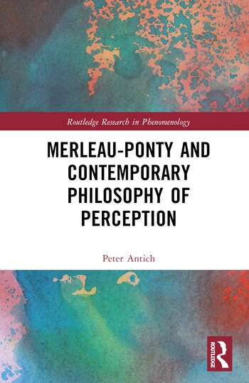
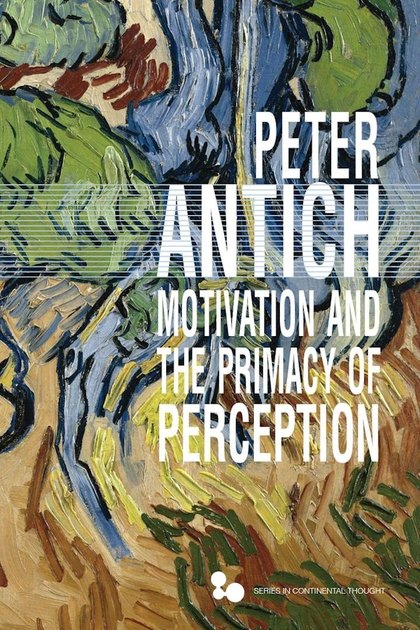

Merleau-Ponty and Contemporary Philosophy of Perception
Routledge Research in Phenomenology. New York: Routledge, 2023.
Reviews: Notre Dame Philosophical Reviews · Chiasmi International
My research asks about the sources of meaning in perception. My first book located a distinctive kind of epistemic ground in what Merleau-Ponty calls motivation — a spontaneous bodily responsiveness to normative demands, irreducible to reason or natural causality. My second argued that perception has a content of its own, perceptual sense, which neither realism nor representationalism can accommodate, and which reveals affordances and moral properties as well as natural kinds. Current work presses that argument toward a relational account of awareness, and extends the question to perceptual categorization: how categories emerge through the relation between perceptual sense and embodied habituation rather than being either found or projected. Throughout, I test phenomenological claims against concrete cases — like dementia, color vision, pattern separation, the perceptual dimensions of racism — and in dialogue with analytic philosophy, critical theory, and the history of philosophy.

Routledge Research in Phenomenology. New York: Routledge, 2023.
Reviews: Notre Dame Philosophical Reviews · Chiasmi International

Series in Continental Thought. Athens: Ohio University Press, 2021.
Read free (open access) · Publisher · JSTOR
Reviews: Phenomenological Reviews · Journal of Transcendental Philosophy
Representation and Awareness: A Phenomenological Sketch. Routledge.
Maurice Merleau-Ponty: Basic Writings, 2nd edition. Editor. Routledge.
Motivation and Temporality. Co-edited with Christos Hadjioannou and Nikos Soueltzis. Routledge.
Motivation and Time in Phenomenology. Special issue of International Journal of Philosophical Studies 33 (5): 511–704. Co-edited with Christos Hadjioannou and Nikos Soueltzis.
“Color as Measure of the World.” New Yearbook for Phenomenology and Phenomenological Philosophy, special issue Phenomenological and Direct Realism, edited by Daniel Neumann and Alexander Ehmann.
“Mitigating Tensions between Phenomenology and Critique.” Puncta: Journal of Critical Phenomenology 6 (2): 6–23.
“Can There Be an Existentialist Virtue Ethics?” The Journal of Value Inquiry 57 (1): 1–20.
“Motivation as an Epistemic Ground.” Phenomenology and the Cognitive Sciences 21: 775–90.
“Why Phenomenology Doesn’t Need Disjunctivism: Merleau-Ponty on Intentionality and Transcendence.” History of Philosophy Quarterly 38 (1): 81–102.
“Merleau-Ponty’s Account of Appearances.” Idealistic Studies 50 (2): 99–119.
“Merleau-Ponty on Hallucination and Perceptual Faith.” Études Phénoménologiques — Phenomenological Studies 4: 49–66.
“Perceptual Experience in Kant and Merleau-Ponty.” Journal of the British Society for Phenomenology 50 (3): 220–33.
“Merleau-Ponty’s Theory of Preconceptual Generalities and Concept Formation.” History of Philosophy Quarterly 35 (3): 279–97.
“Autobiography and the Phenomenology of Personal Identity in Merleau-Ponty.” Life Writing 15 (3): 431–45.
“Motivation, Institution, and Time in Merleau-Ponty.” In Motivation and Temporality, edited by Peter Antich, Christos Hadjioannou, and Nikos Soueltzis. Routledge.
“The Element as Non-Object.” In Experience and Non-Objects: Toward the Phenomenology of Scientific or Religious Indiscernibles, edited by Michael Barber and Olga Louchakova-Schwartz. Bloomsbury.
“Perception, as a Theme in Phenomenology.” In Encyclopedia of Phenomenology, edited by Ted Toadvine and Nicolas de Warren. Springer.
“Autobiography and the Phenomenology of Personal Identity in Merleau-Ponty.” In Philosophy and Life Writing, edited by D. L. LeMahieu and C. Cowley. Routledge.
“Motivation and Time in Phenomenology,” with Christos Hadjioannou and Nikos Soueltzis. Introduction to special issue, International Journal of Philosophical Studies 33 (5).
Review of The Other in Perception: A Phenomenological Account of Our Experience of Other Persons, by Susan Bredlau. Phenomenological Reviews.
Review of Toward a Phenomenology of Addiction, by Frank Schalow. Phenomenological Reviews.
Preprints available on request: peter.antich@duny.edu.